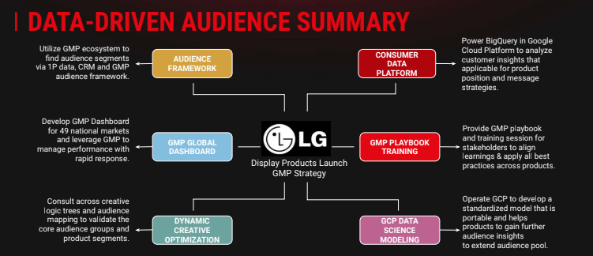
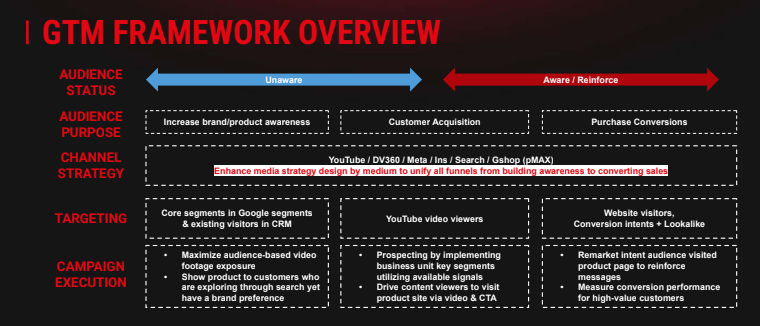

Define growth audiences
Combine first-party, platform and market signals to prioritize segments and tailor product stories.
LG gram · Global integrated campaign · 2022
I connected market prioritization, audience intelligence, creative sequencing, media execution and performance learning—turning one global idea into market-ready action.
02 Strategy + execution
The work covered the full campaign architecture: who to prioritize, what each stage had to communicate, how channels handed off intent and how results informed the next decision.


Combine first-party, platform and market signals to prioritize segments and tailor product stories.
Sequence awareness, acquisition, conversion and remarketing around the audience’s next action.
Align creative, channel and market teams, then feed campaign and site response into optimization.
Takeaway
Full-funnel strategy works when every channel knows the next action it must create.